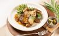

아빠의 파스타
"아빠의 파스타" 대표 메뉴와 슈니들의 생생한 후기

부라타 치즈 샐러드
10,000원 ★★★★★
신선한 토마토와 부라타 치즈, 거기에 주방장님만의 수제 드레싱으로 맛을 낸 샐러드
가성비보다는 가게 스타일때문에 5점 드립니다:) 호텔 주방장님이 들어보니까 신라호텔 주방장 출신이라고 하더라구요..!

트러플&버섯 크림 파스타
13,000원 ★★★★
마늘 크림 베이스에 3가지 버섯과 트러플 오일로 맛을 낸 파스타
진짜 파스타 맛집이에요ㅜㅜ 꾸덕한 맛이 일품, 꾸덕함과 오일리함이 오묘하게 섞여 입맛을 돋구네요 ㅎㅎ(네이버 리뷰)

찹스테이크
29,000원 ★★★★
호주산 쇠고기 안심과 각종 야채, 쉐프 특제 소스로 만든 신라 스타일의 메인 요리
찹스테이크 넘넘 부드럽고 완전 맛있어서 계속 생각이 나요. 후식으로 달콤한 초콜릿도 챙겨주셔서 감사했습니다. 분위기도 고급스럽고 편안해서 또 가고싶어요.(네이버 리뷰)